Why our films read as generated, and three ways out
I downloaded 33 films from Apple, Samsung and app studios, measured every cut, tempo and line of on-screen text, then ran 15 of our own films through the same tools. The gap is narrower than it feels and it sits in four places. Pick a direction at the end and I storyboard an Undirect film in it.
Our cutting is fine. The frame is too full and the music never changes.
Two things are already in range, so I would leave them alone. We cut 0.47 times a second and the references cut 0.43. Our loudness, -13.8 LUFS, is correct for social.
Six places the difference shows
1. Everything is on screen at once


In the references a frame holds one thing: a line of type or the product. They take turns. Ours stacks a headline, a badge and a counter above the phone in every frame, which is the layout of a template, and a viewer recognises it.
2. The phone is a flat rectangle


3. The press is small and crowded


4. The type is loud, boxed and the same every time


The highlighted-word box is the caption style of every auto-captioned short. On 87 calendar posts and 30 films it is the first thing that says "made by a tool".
5. Some of what we show is drawn, and looks it


The pain pages carry invented brands and addresses ending in .example. The films then add timers, counters and an OFF/ON badge that exist in no app. On the calendar, the Settings screen in the "hidden setting" post is built in code (templates.ts, lines 159 to 161), not captured. Real recordings of Undirect exist and are good; the stills further down use them.
6. The ending says four things


Their music goes somewhere. Ours holds one level for 17 seconds.
A slow build, a lift when the phone appears (7.4 s), a second lift on the camera section (30.6 s), then 5.3 s of silence under the logo. The song is "Struggle with the Beast" by Anna von Hausswolff, credited in the description.
One loop at one level. The bump at 9 s is the whoosh on the wipe from OFF to ON. The same track sits under u2, the Cutling sync film and at least two more.
- Tempo is not the recipe. The references run from 56 to 186 BPM. What they share is change: 32 of 33 move to a new section at least once, the first time about a quarter of the way in (median 24 %).
- Apple's ad music is heavy in the bass. In the 2025 and 2026 product ads the band under 90 Hz sits 2.3 to 2.5 dB under the whole mix, the same reading as the tracks the house rejected as "techno". Weight is not what sounded cheap. A drum loop that never changes is.
- The app films use quiet. Raycast Focus, Structured, Things and Apple's scratch ad all swing 15 to 18 LU between soft and loud. Ours swing 2 to 5.
- I measured the audio. I cannot hear it. Genre words on this page come from credits, from the speech recogniser's tags and from spectrograms. The music itself has to be chosen by your ear, from a short reel, in step 2.
The stills have the same habits, and one exception


The Monholt debut carousel (white type on black, a grey forest photo) is closer to a studio's voice than the app posts are. Its weak point is the second slide, where two phones on flat red and mint panels fall back into the template.
Each one fixes the four gaps in a different way
The stills below are style frames I built today from real recordings of Undirect in Safari. They show layout, type, colour and light. The device is a flat stand-in; the films would use the house's 3D iPhone. Each beat table follows the product-video rules: the real control is shown being pressed, the press runs about 3 s, frame 0 is the best still. Bars are laid on a nominal tempo and move to the chosen track.
Black stage
The phone is the only thing on a dark stage. A tap goes wrong, one press, the same tap goes right. Words and product take turns and never share a frame.
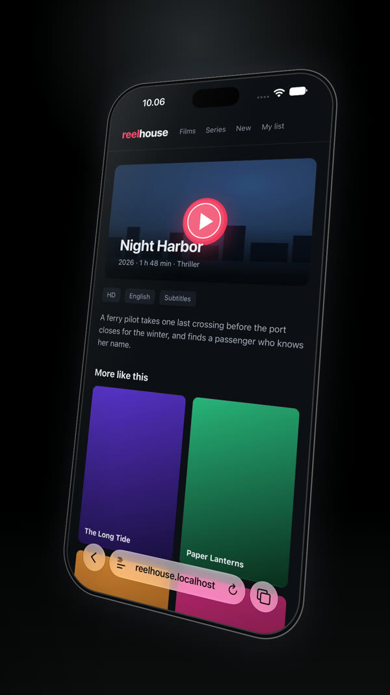
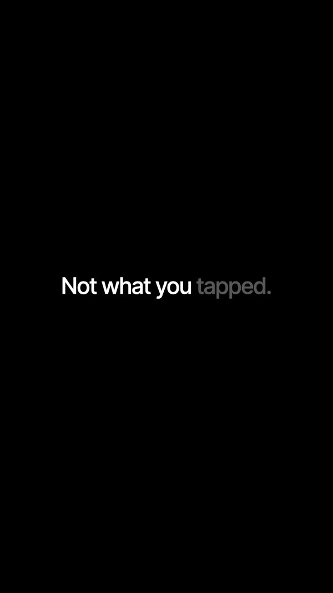
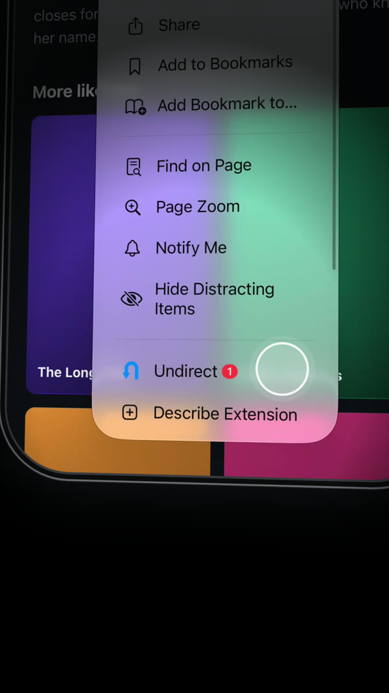
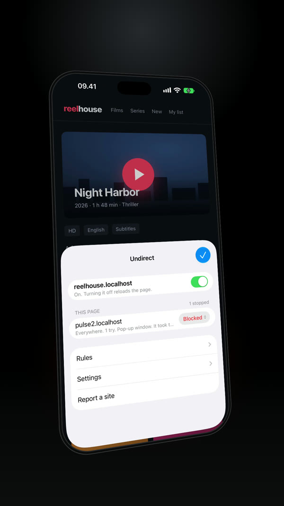
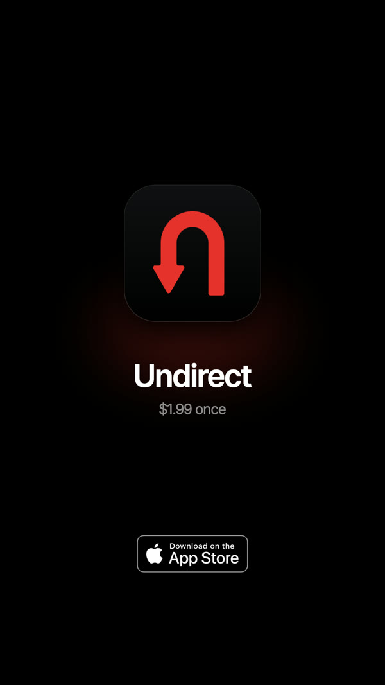


- Music
- A real song with weight and a slow build, 80 to 100 BPM, one lift a quarter of the way in and a second on the payoff. Apple's two iPhone 18 Pro films measure 83.6 and 92.5 BPM. This direction depends on the track more than the other two.
- Type
- Inter Tight, the font we already license, at medium weight instead of extra bold, one line, centred, about 7 % of the frame width. No boxes behind words. Lines of 2 to 4 words.
- Motion
- One slow camera move per shot on the 3D iPhone, 1.2 s or longer, then a hold. Words light up left to right in 0.3 s, as Apple's do.
- Sound
- The song, one low hit on each touch, a third of a second of near silence before the press. Music stops before the icon; the icon holds in a ringing tail.
- Colour
- Black. Red comes only from the app: its icon, its Blocked chip. No vignette.
- Photos
- One piece of real interface, large, lit, on black, with one short line under it. The 4:5 still in the strip shows it.
- Risk
- Dark, minimal tech films are common. With library music that does not build, this turns back into what we have.
| # | Bars (s) | On screen | Motion | Caption (words) | Sound | Reference |
|---|---|---|---|---|---|---|
| 1 | bar 1 · 0.0–2.9 | The iPhone alone, lit from above, a film site on screen (real take ip-stream-off). A touch lands on Play at 1.4 s and another site replaces the page. | Push in from 1.0 to 1.15 over 2.4 s, hold 0.5 s. | none | Low note fades in. One low hit on the tap. | apple-iphone-18-pro-ad, phone in smoke |
| 2 | bar 2 · 2.9–5.7 | Black. One line. | Words light left to right in 0.3 s, hold 2.5 s. | Not what you tapped. 4 words, needs 2.5 s | Music thins to the low note. | apple-iphone-17-pro-ad, fact cards |
| 3 | bar 3 · 5.7–8.6 | The press. Safari's page menu, the Undirect row (real take ip-stream-on, 11 to 13 s). | One continuous move: in to 2x on the row in 1.2 s, press at 7.1 s, hold 0.6 s, back out to the whole phone as the page reloads with Undirect on. | none | 0.3 s of near silence, then one click on the press. | samsung-s26-privacy-display, finger on the switch |
| 4 | bar 4 · 8.6–11.4 | Black. One line. | Same word sweep, hold 2.5 s. | One press. 2 words, needs 1.6 s | A bar of build. | app-things, "all-new feel" |
| 5 | bar 5 · 11.4–14.3 | The phone from the other side. Tap on Play: the film page stays. Undirect's sheet rises: "1 stopped", "Blocked" (real take reel-on). | Phone turns 14° in 1.4 s and holds. A loupe enlarges the Blocked chip for the last 1.2 s. | none | The lift lands on the tap at 11.4 s. | apple-iphone-18-pro-ad, second lift at 30.6 s |
| 6 | bar 6 · 14.3–17.1 | The icon on black at 35 % of the width, the name, the price, the App Store badge. | Icon settles in 0.6 s, holds 2.2 s. | Undirect · $1.99 once | Music stops at 14.3 s. The last note rings out. | app-linear-agent, mark alone on black |
Laid on 84 BPM (one bar is 2.86 s), 17.1 s in all.
Daylight table
A phone on a sunlit table. Each wrong tap deals another page onto the table like junk mail. One press clears it.
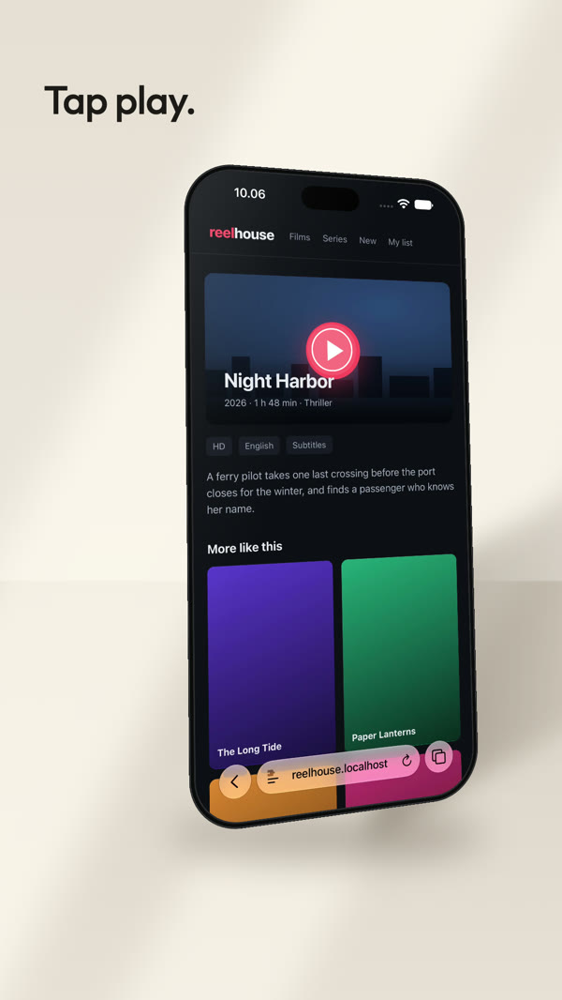
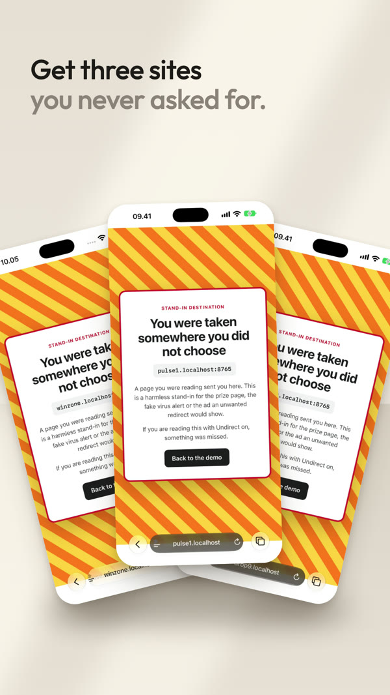
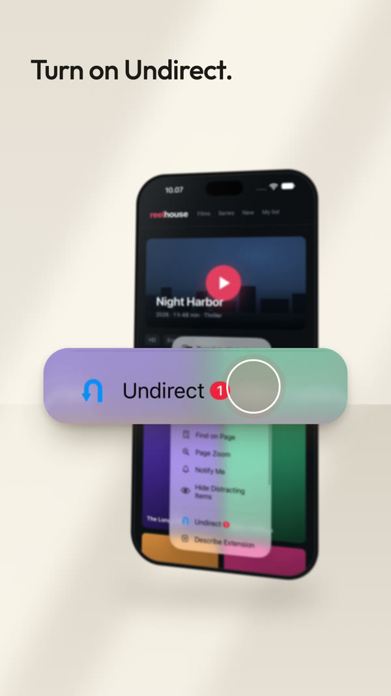
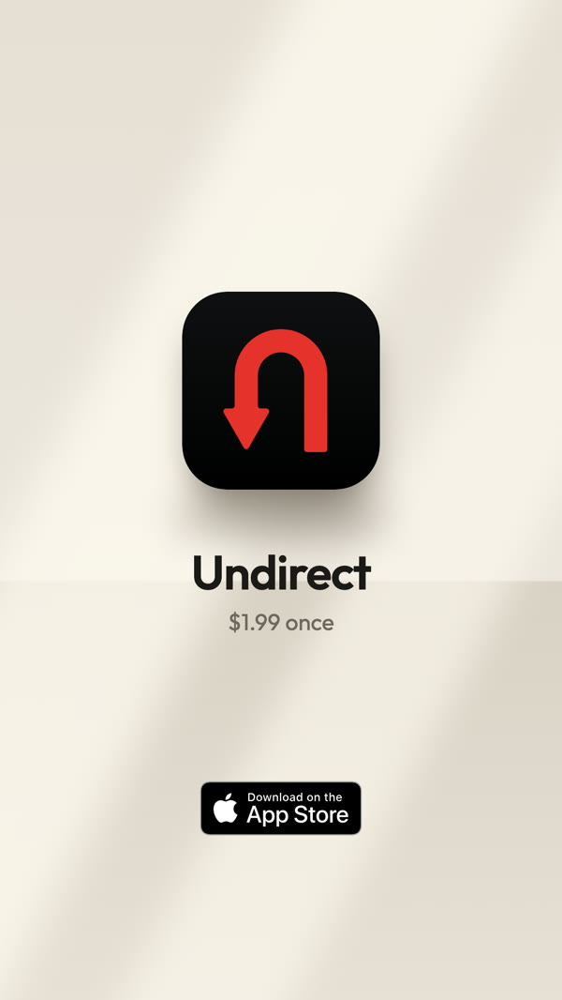
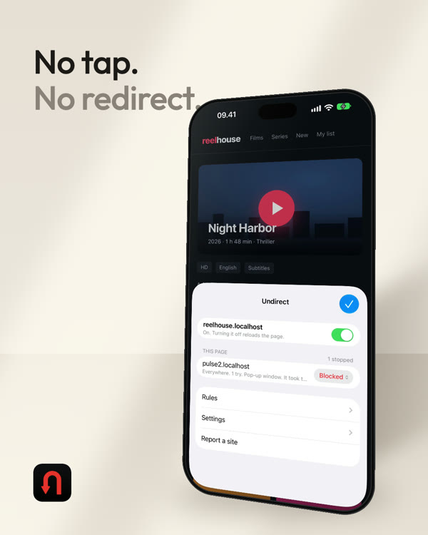


- Music
- Bright and light on its feet: plucked bass, hand percussion, 93 to 130 BPM. Samsung's One UI 8.5 film measures 130 BPM and the Fold7 film 93.
- Type
- Outfit, a free geometric sans close to Samsung's, medium weight, set small at the top left. The second line goes grey. Captions of 2 to 7 words.
- Motion
- Things arrive on springs and settle. The one row that matters lifts out of the phone as its own card, as One UI 7 lifts its prompt bar.
- Sound
- Soft taps, one paper slide repeated for each page, a single whoosh when the table is cleared.
- Colour
- Warm paper, window light, soft shadow. The phone and the icon supply the black and the red.
- Photos
- Still lifes rendered with the house path tracer, the way the "No tap. No redirect." pebble was made, with a real screenshot on the device.
- Risk
- Pastel sets are the look generated imagery copies most. Unless the set is path-traced with true shadows it will read as AI again. The loud yellow stand-in pages would need to become believable sites.
| # | Bars (s) | On screen | Motion | Caption (words) | Sound | Reference |
|---|---|---|---|---|---|---|
| 1 | bar 1 · 0–2 | The phone standing on a pale set in window light, the film site on screen (real take). A touch on Play at 1.0 s. | Camera drifts right 4 % over 2 s. | Tap play. 2 words, needs 1.6 s | Pluck pattern starts. Soft tap. | samsung-short-8th-gen, the set |
| 2 | bars 2–3 · 2–6 | Three pages slide out from behind the phone and fan on the table: the three destinations from the real takes, one on each beat. | Each card springs out and settles in 0.5 s. Hold 1.5 s on the fan. | Get three sites you never asked for. 7 words, needs 4.0 s | One soft paper slide per card, the same cue each time. | samsung-short-8th-gen, bubbles piling up |
| 3 | bars 4–5 · 6–10 | The press. The cards are swept off. Safari's page menu; the Undirect row lifts out as its own card and is pressed; it drops back and the page reloads. | Sweep 0.4 s, push in 1.2 s, press at 7.8 s, hold 0.6 s, back to the whole phone by 9.4 s. | Turn on Undirect. 3 words, needs 2.1 s | One whoosh on the sweep. Music thins to one voice. Click on the press. | samsung-one-ui-7, the bar leaving the phone |
| 4 | bars 6–7 · 10–14 | Tap on Play at 10.5 s. The film page stays. The "Blocked" row lifts out beside the phone. | Phone holds. Card rises in 0.5 s and holds 1.8 s. | Tap play. Get the film. 5 words, needs 2.9 s | The full arrangement returns on the tap. | samsung-short-fold8-thin, the proof shot |
| 5 | bars 8–9 · 14–18 | The icon on the same set with its shadow, the name, the price, the badge. | Icon drops in with a small bounce, settled by 14.8 s. | Undirect · $1.99 once | Last chord, tail to 18 s. | samsung-short-fold8-thin, end lockup |
Laid on 120 BPM (one bar is 2.0 s), 18 s in all.
Filmed close
So close you can see the pixels. The address bar changes under your thumb, three times, faster each time. One press, and it stops.
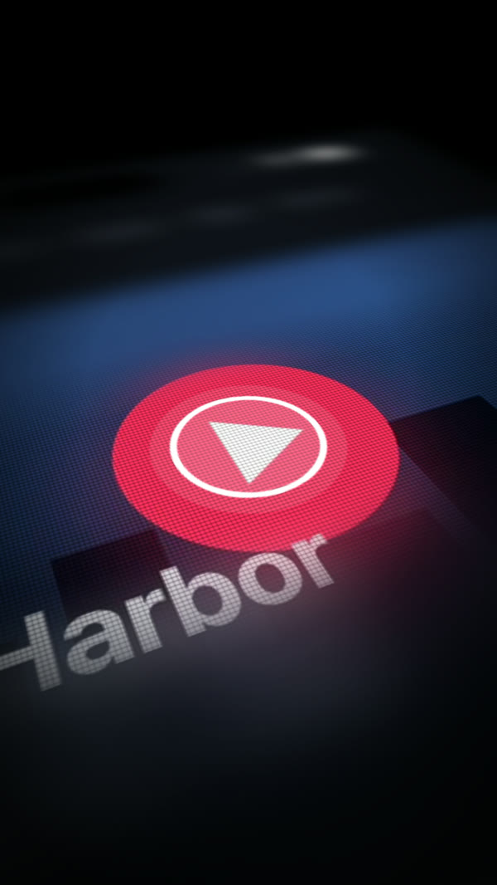
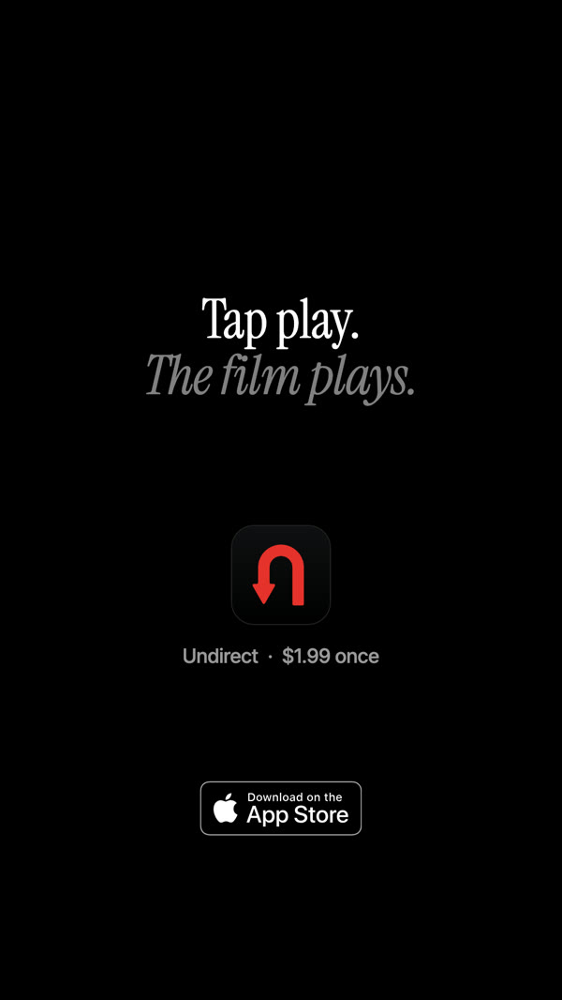


- Music
- Hardly any. A clock tick, one low string note that climbs, silence at the press, one warm chord on the result. Raycast Focus and Screen Studio 4.0 both sit near 60 BPM and swing 9 to 18 LU. This is the cheapest direction to score and the least catchy.
- Type
- No captions until the end. Then one line in Instrument Serif, a free face, with the second half in grey.
- Motion
- Locked macro shots of 1.2 to 1.4 s where the screen does the moving, cut at 0.7 shots a second like Screen Studio 4.0. One long pull back from the switch to the whole phone at the press.
- Sound
- Real taps, the tick, and quiet. The cut to silence is the loudest moment.
- Colour
- Whatever the screen shows, with black around it.
- Photos
- A real screenshot seen at a steep angle with shallow focus and one serif line.
- Risk
- The focus blur and pixel grid would be rendered, so the film imitates a lens. The honest version is you filming your own iPhone screen with a second phone, hands only. It also asks the viewer to read small real text.
| # | Bars (s) | On screen | Motion | Caption (words) | Sound | Reference |
|---|---|---|---|---|---|---|
| 1 | bar 1 · 0.0–2.0 | Macro on the Play button of the real page. The thumb presses at 0.8 s. | Slow slide across, 1.2 s, then hold. | none | Room tone. One tick a beat. The tap. | app-screen-studio-4 |
| 2 | bar 1 · 2.0–4.0 | Macro on the address bar as the film site's name becomes another. | Focus pulls from the page to the address in 0.6 s. | none | Tick. A low string note enters. | app-raycast-focus, notifications in macro |
| 3 | bar 2 · 4.0–8.0 | Back, tap, again: two more addresses, three locked shots of 1.3 s. | Camera locked. The address changes inside each shot. | none | Ticks double. The note climbs. | app-dia, 1.3 s median shot |
| 4 | bar 3 · 8.0–11.0 | The press. Safari's page menu; the Undirect row comes into focus and is pressed at 9.2 s. | Focus pull 0.8 s, press, then one continuous pull back, 1.4 s, until the whole phone is level and sharp. | none | Everything stops at 8.0 s. Only the click of the press. | apple-iphone-17-scratch, silence as tension |
| 5 | bars 3–4 · 11.0–15.0 | The whole phone, calm. Tap on Play at 11.6 s: the film page stays. Then macro on the sheet as focus moves from the blocked address to "Blocked". | Hold 2 s, cut to macro, focus pull 0.8 s, hold. | none | One warm chord on the tap, left to ring. | app-linear-agent, shallow focus |
| 6 | bar 4 · 15.0–18.5 | Black. A serif line, the icon, the price, the badge. | Line fades up in 0.3 s and holds 3.2 s. | Tap play. The film plays. 5 words, needs 3.1 s | The chord's tail. Silence for the last second. | app-arc-1-0, serif cards |
Laid on 60 BPM (one bar is 4.0 s), 18.5 s in all.
I would build A, and shoot its press as close as C
A is the grammar of the films you named: Apple's iPhone 17 Pro and 18 Pro ads, and the Halide, Things and CleanShot films, all show a card of words, then the product, in turn. It removes the biggest measured gap by construction, because a frame holds words or the product and never both. It keeps Undirect's black and red, needs no new set, and Cutling can stand on the same stage in green. Its one weakness is that it leans on the song, which is also the thing you said you respond to.
- Direction: A, B or C. Mixing is fine if you say which part.
- Music budget: stay on free Mixkit, or take Epidemic Sound's Business plan at US$20 a month billed US$240 a year, with 30 days free to listen first.
Either way, step 2 starts with a reel of five tracks for you to choose by ear, then the storyboard and a wireframe on that track. No film is built before you approve those.
Where a track with a real build can come from
| Source | Cost | Covers | Catch |
|---|---|---|---|
| Epidemic Sound, Business | US$20 a month, billed US$240 yearly. 30 days free. | A brand's own social posts, websites and paid ads. Protects 3 channels per platform. For revenue under $10M. | Films published while subscribed stay licensed. Nothing new may be published after cancelling. |
| Mixkit | Free | Social posts and online ads, no credit line. Its licence forbids Content ID registration, so no claims. | A small catalogue. Both loops under our social films come from it. |
| TikTok Commercial Music Library, Meta Sound Collection | Free for business accounts | Recognisable songs, added inside the app when posting. | The track cannot leave that platform and the film cannot be cut to it beforehand. |
| Artlist | Not confirmed | Its pricing page showed only AI plans when I read it; the music plans did not load. | Left out until the page can be read. |
| Pixabay | Free | Out since 18 Nov 2026. | A distributor registered "Revival" with Content ID and blocked two Cutling Shorts. |
Prices read on each company's own page on 21 Nov 2026. Mixkit's terms were read on 20 Nov 2026.
All 33 films, measured
Open the table
| Film | Length | Shots a second | Median shot | BPM | Text lines | Silent end |
|---|---|---|---|---|---|---|
| Arc 1.0 | Everything or nothingThe Browser Company · 2023 | 34 s | 0.84 | 0.8 s | 140 | 1 | 0 s |
| Why is Arc Search a better mobile browser?The Browser Company · 2024 | 60 s | 0.17 | 4.8 s | 110 | 7 | 0 s |
| Introducing CleanShot 5.0 - Studio Mode & Brand-New …CleanShot X · 2026 | 81 s | 0.40 | 2.1 s | 113 | 1 | 0.2 s |
| Introducing Craft for iPhone, iPad, and MacCraft Docs · 2020 | 132 s | 0.11 | 2.5 s | 95 | 7 | 0 s |
| Introducing Cursor 2.0Cursor · 2025 | 64 s | 0.25 | 2.4 s | 113 | 9.5 | 1 s |
| Dia Browser | Never Explain Yourself AgainThe Browser Company · 2025 | 78 s | 0.64 | 1.3 s | 173 | 0 | 0.5 s |
| Say hello to RecipesGranola · 2025 | 43 s | 0.25 | 2.2 s | 106 | 1 | 0 s |
| This is Big: Introducing Halide 2.2Halide – The best pro camera for iPhone & iPad · 2021 | 36 s | 0.67 | 1.2 s | 108 | 0 | 0 s |
| Halide Mark II: The Best Pro Camera for iPhoneHalide – The best pro camera for iPhone & iPad · 2020 | 44 s | 0.64 | 1.4 s | 60 | 0.5 | 1.1 s |
| Introducing Linear AgentLinear · 2026 | 55 s | 0.16 | 5.5 s | 56 | 1 | 1 s |
| Introducing the new Notion AINotion · 2024 | 57 s | 0.35 | 2.2 s | 140 | 3.5 | 1 s |
| Raycast Focus: Enter Flow StateRaycast · 2025 | 51 s | 0.61 | 1.4 s | 60 | 0 | 0 s |
| New Raycast. Coming 2026Raycast · 2025 | 39 s | 0.34 | 2.2 s | 68 | 2 | 0 s |
| Introducing Screen Studio 4.0Screen Studio · 2026 | 83 s | 0.70 | 1.1 s | 62 | 1 | 0.8 s |
| Structured Daily Planner - Your Day. Your Way.Structured - Daily Planner · 2024 | 75 s | 0.69 | 1.1 s | 92 | 0 | 3.6 s |
| Meet the all-new ThingsCultured Code (own site) · 2026 | 71 s | 0.41 | 1.4 s | 186 | 2 | 4 s |
| iOS 26: Introducing Liquid GlassApple · 2025 | 274 s | 0.31 | 2.3 s | 118 | 0.5 | 6.4 s |
| iPhone 15 Pro | Titanium | AppleAds (re-upload) · 2023 | 29 s | 0.68 | 1.0 s | 137 | 0 | 0 s |
| iPhone 16 Pro Reveal (4K)Apple Spectrum (re-upload) · 2024 | 39 s | 0.33 | 2.2 s | 96 | 0 | 1 s |
| iPhone 17 Pro: The most powerful iPhone everApple · 2026 | 60 s | 0.50 | 1.7 s | 130 | 1 | 5 s |
| iPhone 17: 3x More Scratch ResistantApple · 2026 | 35 s | 0.51 | 1.4 s | 123 | 0 | 5 s |
| iPhone 18 Pro: The ultimate performance and camera o…Apple · 2026 | 55 s | 0.44 | 1.7 s | 84 | 1 | 5.3 s |
| Introducing the new iPhone 18 ProApple · 2026 | 177 s | 0.67 | 1.1 s | 92 | 0 | 5.1 s |
| Privacy on iPhone: Safari helps block data trackersApple · 2026 | 65 s | 0.66 | 1.3 s | 87 | 0 | 5 s |
| A day with One UI | SamsungSamsung · 2025 | 62 s | 0.16 | 5.0 s | 94 | 1 | 1.2 s |
| Galaxy S26 Series Design Film삼성전자 뉴스룸 [Samsung Newsroom] · 2026 | 60 s | 0.20 | 3.1 s | 121 | 0 | 1.2 s |
| Introducing Galaxy S26 Ultra | Galaxy AI | SamsungSamsung · 2026 | 212 s | 0.39 | 2.1 s | 123 | 0 | 5 s |
| One UI 7 | A true AI companion | SamsungSamsung India · 2025 | 115 s | 0.49 | 1.6 s | 80 | 1 | 5.7 s |
| All about Galaxy | One UI 8.5 | Galaxy AI | SamsungSamsung Philippines · 2026 | 66 s | 0.44 | 1.9 s | 130 | 2 | 5.3 s |
| Privacy Display | Galaxy S26 Ultra | SamsungSamsung · 2026 | 35 s | 0.43 | 1.7 s | 123 | 0 | 5.2 s |
| 8th Gen Foldables | Galaxy Z Fold8 Ultra and Fold8 |…Samsung · 2026 | 15 s | 0.27 | 1.7 s | 119 | 1.5 | 0 s |
| Thin. Pocket-light | Galaxy Z Fold8 | SamsungSamsung · 2026 | 15 s | 0.47 | 2.0 s | 178 | 1 | 0 s |
| Ultra Unfolds | Galaxy Z Fold7 | SamsungSamsung UK · 2025 | 35 s | 0.31 | 3.2 s | 93 | 0 | 5 s |
How this was measured, and what it cannot tell you
- Each film was downloaded at 720p with yt-dlp (Things from Cultured Code's own site) and read with ffmpeg. A cut is a frame whose change is at least six times its neighbours'. Checked by hand on one film, this counted 24 shots where I counted about 27.
- Tempo and section changes come from the house beat tracker. Loudness is EBU R128. Speech was transcribed with whisper. Text was read with Apple's text recognition on one frame per shot.
- I cannot listen. Nothing here judges whether a track is catchy. Font names are by eye unless the brand publishes them.
- Apple's own iPhone 15 Pro and 16 Pro films are no longer on its channel. Two re-uploads stand in for 2023 and 2024 and are used for picture only.
- Flighty has no official film on YouTube and no preview video on its App Store page, so it is missing. Screen Studio, Dia, Cursor, Granola and Structured were added.
- Reference frames are shown small for comparison and belong to their makers. One note per film, with its link and numbers, is in docs/research/pro-film-refs/ in the Undirect repository.